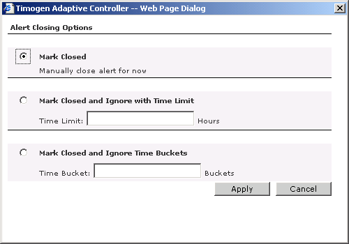

Timogen Web Site
Voice: (650) 903-9888
Fax: (650) 903-9327
info@timogen.coms
Closing Alerts
You can close an alert instead of taking action on it. When you close an alert, you have several options that can prevent similar alerts from being generated for a specified time.
To close an alert1 View the detail page of the alert you want to close. (See "Viewing Alerts".)2 Click Close Alert. The Alert Closing Options dialog box appears.3 Select an alert closing option:4 Click Apply.
|
|
Timogen Systems Timogen Web Site Voice: (650) 903-9888 Fax: (650) 903-9327 info@timogen.coms |